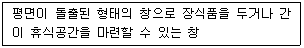
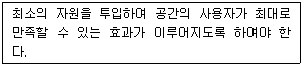
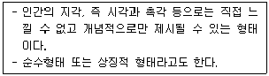
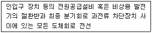

실내건축기사(구) (2020-09-26 기출문제)
1과목: 실내디자인론
1. 공간에 관한 설명으로 옳지 않은 것은?
- 모든 사물을 담고 있는 무한한 영역을 의미한다.
- 실내 디자인에 있어서 가장 기본적인 요소이다.
- 실내의 공간은 건축의 구조물에 의해 그 영역이 한정될 수 있다.
- 사용자의 시각적인 위치에 따라 공간의 형태와 느낌은 변화하지 않는다.
(정답률: 83%)

2. 날개의 각도를 조절하여 일광, 조망 그리고 시각의 차단 정도를 조정하는 수평형 블라인드는?
- 롤 블라인드(roll blind)
- 로만 블라인드(roman blind)
- 버티컬 블라인드(vertical blind)
- 베네시안 블라인드(venetian blind)
(정답률: 65%)
3. 상점의 실내디자인에서 진열장의 유효진열 범위에 관한 설명으로 옳지 않은 것은?
- 고객의 흥미를 유지시키면서 보기 쉽고 사기쉽도록 진열하는 것이 중요하다.
- 신체조건과 시선을 고려하여 상품의 종류와 특성에 따라 합리적인 진열이 되도록 한다.
- 사람의 시각적 특성은 우측에서 좌측으로, 큰 상품에서 작은 상품으로 이동하므로 진열의 흐름도 이에 준하는 것이 필요하다.
- 유효진열범위 내에서도 고객의 시선이 가장 편하게 머물고 손으로 잡기에도 가장 편안한 높이는 850 ~ 1250mm이며, 이 범위를 골든 스페이스(golden space)라 한다.
(정답률: 85%)
4. 주택의 부엌가구 배치 유형에 관한 설명으로 옳지 않은 것은?
- ㄷ자형은 작업면이 넓어 작업 효율이 좋다.
- ㅡ자형은 좁은 면적 이용에 효과적이므로 소규모 부엌에 주로 이용되는 형식이다.
- 병렬형은 작업대 사이에 식탁을 설치하여 부엌과 식당을 겸할 경우 많이 활용된다.
- ㄴ자형은 두벽면을 이용하여 작업대를 배치한 형태로 한 쪽 면에 싱크대를, 다른 면에는 가스레인지를 설치하면 능률적이다.
(정답률: 76%)
5. 공동주택의 평면형식에 관한 설명으로 옳지 않은 것은?
- 계단실형은 거주의 프라이버시가 높다.
- 중복도형은 엘리베이터 이용 효율이 높다.
- 편복도형은 거주성이 균일한 배치구성이 가능하다.
- 집중형은 대지의 이용률은 낮으나 대규모 세대의 집중적 배치가 가능하다.
(정답률: 66%)
6. 조명기구의 설치방법 중 벽부형에 관한 설명으로 옳지 않은 것은?
- 확산벽부형은 복도나 계단 등에 사용된다.
- 선벽부형은 거울이나 수납장에 설치하여 보조조명으로 사용한다.
- 부착되는 위치가 시선 내에 있으므로 휘도가 높은 광원을 사용한다.
- 조명기구를 벽체에 설치하는 것으로 브라켓(bracket)이라 통칭된다.
(정답률: 81%)
7. 개방식 배치의 한 형식으로 업무와 환경을 경영관리 및 환경적 측면에서 개선한 것으로 오피스 작업을 사람의 흐름과 정보의 흐름을 매체로 효율적인 네트워크가 되도록 배치하는 배치방법은?
- O.A 시스템
- 워크 스테이션
- One-Room 시스템
- 오피스 랜드스케이프
(정답률: 82%)
8. 다음 설명에 알맞은 창의 종류는?

- 고창(clerestory)
- 윈도우 월(window wall)
- 베이 윈도우(bay window)
- 픽쳐 윈도우(picture window)
(정답률: 68%)
9. 다음 설명에 알맞은 실내디자인의 조건은?

- 기능적 조건
- 심미적 조건
- 경제적 조건
- 물리·환경적 조건
(정답률: 85%)
10. 다음 설명에 알맞은 형태의 종류는?

- 자연형태
- 인위형태
- 이념적 형태
- 추상적 형태
(정답률: 67%)
11. 상업공간에서 비주얼 머천다이징(VMD) 전개시스템에 관한 설명으로 옳은 것은?
- 아이템 프레젠테이션(IP)은 테이블, 벽면 상단이나 상판 등에서 기본 상품을 표현한다.
- 아이템 프레젠테이션(IP)은 블록별 상품의 포인트를 표현하며, 블록의 이미지를 높인다.
- 비쥬얼 프레젠테이션(VP)은 고객의 시선이 처음 닿는 곳을 중심으로 상점 이미지를 표현한다.
- 포인트 프레젠테이션(PP)은 쇼 윈도우, 층별 메인 스테이지 등에서 블록 이미지를 표현한다.
(정답률: 55%)
12. 쇼룸의 공간구성은 상품전시공간, 상담공간, 어트랙션(attraction)공간, 서비스공간, 통로공간, 출입구를 포함한 파사드로 구성되어진다. 다음 중 어트랙션(attraction)공간에 관한 설명으로 가장 알맞은 것은?
- 구매상담을 도와주고 관람자를 통제하는 공간이다.
- 전시상품에 대한 정보를 알리거나 관람자를 안내하기 위한 공간이다.
- 입구에서 관람객의 시선을 집중시켜 쇼룸의 내부로 관람객을 유인하는 역할을 한다.
- 진열되는 상품을 디스플레이하기 위한 공간으로 진열대와 진열가구, 연출기구 등이 필요하다.
(정답률: 69%)
13. 다음 그림이 나타내는 형태지각의 원리는?
- 유사성
- 접근성
- 폐쇄성
- 형과 배경의 법칙
(정답률: 80%)
14. 실내공간을 구성하는 기본요소에 관한 설명으로 옳은 것은?
- 바닥은 공간의 영역 조정 기능이 없다.
- 천장을 낮추면 친근하고 아늑한 공간이 되고 높이면 확대감을 줄 수 있다.
- 눈높이보다 낮은 벽은 공간을 차단하고 높은 벽은 상징적인 경계를 나타낸다.
- 천장은 공간을 에워싸는 수직적 요소로 수평방향을 차단하여 공간을 형성하는 기능을 한다.
(정답률: 79%)
15. 연속적인 주제를 시간적인 연속성을 가지고 선형으로 연출하는 전시방법은?
- 하모니카 전시
- 파노라마 전시
- 아일랜드 전시
- 아이맥스 전시
(정답률: 83%)
16. 우리나라의 한옥에 관한 설명으로 옳지 않은 것은?
- 창과 문은 좌식생활에 따른 인체치수를 고려하여 만들어졌다.
- 기단을 높여 통풍이 잘 되도록 하여 땅의 습기를 제거하였다.
- 미닫이문, 들문 등의 사용으로 내부공간의 융통성을 도모하였다.
- 남부지방의 경우 겨울철 난방을 고려하여 기밀하고 폐쇄적인 내부공간구성으로 계획하였다.
(정답률: 81%)
17. 광원을 넓은 면적의 벽면에 매입하여 비스타(vista)적인 효과를 낼 수 있는 건축화 조명 방식은?
- 광창조명
- 광천장조명
- 코니스조명
- 밸런스조명
(정답률: 60%)
18. 스툴의 종류 중 편안한 휴식을 위해 발을 올려 놓는데도 사용되는 것은?
- 세티
- 오토만
- 카우치
- 풀업체어
(정답률: 59%)
19. 실내디자인의 계획 조건을 외부적 조건과 내부적 조건으로 구분할 경우, 다음 중 내부적 조건에 속하는 것은?
- 일조 조건
- 개구부의 위치
- 소화설비의 위치
- 의뢰인의 공사예산
(정답률: 70%)
20. 이질(異質)의 각 구성요소들이 전체로서 동일한 이미지를 갖게 하는 것으로, 변화와 함께 모든 조형에 대한 미의 근원이 되는 원리는?
- 조화
- 강조
- 통일
- 균형
(정답률: 59%)
2과목: 색채학
21. 디지털 색채 시스템 중 HSB시스템에 대한 설명으로 틀린 것은?
- 먼셀의 색채개념인 색상, 명도, 채도를 중심으로 선택하도록 되어 있다.
- 프로그램 상에서는 H모드, S모드, B모드를 볼 수 있다.
- H모드는 색상을 선택하는 방법이다.
- B모드는 채도 즉, 색채의 포화도를 선택하는 방법이다.
(정답률: 70%)
22. 먼셀기호의 표기 방법이 옳은 것은?
- 명도 축은 1단계로 나뉘어져 있다.
- 표기 방법은 H V/C이다.
- 평행선상에 있는 색은 순색이다.
- 무채색축의 스케일은 S로 표시한다.
(정답률: 68%)
23. 오스트발트의 등색상 삼각형에서 등백계열의 조화에 해당하는 것은?
- pn – pi - pe
- ec – ic - nc
- ia – lc - nc
- gc – lc –lg
(정답률: 71%)
24. 한국산업표준 KS에 의한 관용색명과 색계열의 연결이 틀린 것은?
- 벽돌색(copper brown) - R 계열
- 올리브그린(olive green) - GY 계열
- 라벤더(lavender) - RP 계열
- 크림색(cream) Y 계열
(정답률: 55%)
25. 단색광과 파장의 범위가 틀리게 짝지어진 것은?
- 파랑 : 약 450~500nm
- 빨강 : 약 360~450nm
- 초록 : 약 500~570nm
- 노랑 : 약 570~590nm
(정답률: 70%)
26. 물체색에 대한 설명 중 틀린 것은?
- 빛을 대부분 반사시키면 흰색이 된다.
- 빛을 완전히 흡수하면 이상적인 검정색이 된다.
- 빛의 일부는 반사하고 일부는 흡수하면 회색이 된다.
- 빛의 반사율은 0% ~ 100%가 현실적으로 존재한다.
(정답률: 69%)
27. 포맷형식에 대한 내용으로 틀린 것은?
- EPS 포맷은 대표적인 PostScript 그래픽의 포맷이다.
- DCS 포맷은 파일을 비트맵 모드에서 사용할 경우 이미지의 흰색부분을 투명하게 지원하는 유일한 포맷이다.
- DCS 포맷은 네 개의 분리된 CMYK의 PostScript 파일들과 문서에서 위치 지정을 위한 추가적인 다섯 번째의 EPS 마스터로 구성된 포맷이다.
- TIFF 포맷은 컬러 및 회색 음영의 이미지를 페이지 조판 프로그램으로 보내기 위해 사용할 수 있는 유용한 포맷이다.
(정답률: 50%)
28. 색채의 공감각 중에서 쓴맛이 나는 배색은?
- red, pink
- brown-maroon, olive green
- green, grey
- yellow, yellow green
(정답률: 67%)
29. 감법혼색의 3원색이 아닌 것은?
- Blue
- Cyan
- Yellow
- Magenta
(정답률: 73%)
30. 색명기호에서 gB는?
- blue green
- bluish green
- greenish blue
- blue
(정답률: 74%)
31. 공공성을 가진 차량을 도장할 때 주의해야 할 사항으로 틀린 것은?
- 도장 공정이 간단할수록 좋다.
- 보수도장을 위해 조색이 용이할수록 좋다.
- 일반인들이 사용하지 못하게 특수 색료를 사용한다.
- 변색, 퇴색하지 않는 색료가 좋다.
(정답률: 78%)
32. 복잡한 가운데 질서의 요소를 미(美)의 기준으로 보고, 색의 3속성을 고려한 독자적인 색공간을 가정하여 조화관계를 주장한 사람은?
- W. Ostwald
- Munsell
- P. Moon & D. E. Spencer
- Faber Birren
(정답률: 56%)
33. 순색의 채도가 높은 것끼리 짝지어진 것은?
- 노랑, 주황
- 회색, 초록
- 연두, 청록
- 초록, 파랑
(정답률: 72%)
34. 파버 비렌(faber birren)의 색채와 형태 연결이 맞는 것은?
- 빨강 : 정사각형
- 주황 : 삼각형
- 노랑 : 직사각형
- 파랑 : 육각형
(정답률: 54%)
35. 컬러 인화 사진은 대부분 어떤 혼색방법을 이용한 것인가?
- 가법혼색
- 평균혼색
- 감법혼색
- 색광혼색
(정답률: 61%)
36. 색채학자 저드(D. B. Judd)의 일반적인 4가지 색채조화의 원리가 아닌 것은?
- 유사성의 원리
- 명료성의 원리
- 대비성의 원리
- 친근성의 원리
(정답률: 50%)
37. 색채의 감정에 대한 설명으로 옳은 것은?
- 주황색·황색 등의 색상은 수축감을 느끼게하며 생리적, 심리적으로 긴장감을 준다.
- 붉은색 계통의 색은 시간의 경과가 짧게 느껴지고, 푸른색 계통은 시간의 경과가 길게 느껴진다.
- 난색계통의 고명도·고채도를 사용하면 흥분감을 준다.
- 색의 중량감은 주로 채도에 의하여 좌우된다.
(정답률: 63%)
38. 가산혼합의 결과로 틀린 것은?
- Red + Green = Yellow
- Red + Blue = Magenta
- Green + Blue = Magenta
- Red + Green + Blue = White
(정답률: 65%)
39. 문·스펜서의 새상에 대한 균형점(balance point)에서 채도의 경우 자극을 못 느끼는 수치는?
- 3 이하
- 3 이상
- 7 이하
- 7 이상
(정답률: 62%)
40. 가시광선은 파장 380 ~ 780nm의 전자파를 말하는데 380nm 이하의 파장을 갖고 있으면서 화학작용 및 살균작용을 하는 전자파는?
- 적외선
- 자외선
- 휘선
- 흑선
(정답률: 63%)
3과목: 인간공학
41. 인간공학에 대한 설명으로 옳지 않은 것은?
- 인간요소를 고려한 학문으로서 일본에서 태동하였다.
- 실용적 효능과 인생의 가치 기준을 높이는데 목표를 두고 있다.
- 인가의 특성이나 행동에 대한 적절한 정보를 체계적으로 적용하는 것이다.
- 물건, 기구, 환경을 설계하는 과정에서 인간을 고려하는데 초점을 두고 있다.
(정답률: 75%)
42. 눈의 구조 중 맥락막에 관한 설명으로 옳은 것은?
- 안구의 가장 바깥쪽 표면에 있어서 눈에서 제일 먼저 빛이 통과하는 부분이다.
- 안구벽의 가장 안쪽에 위치하고, 수정체에서 굴절되어 온 상이 생기는 부분이다.
- 안구벽의 중간층을 형성하는 막으로 모양체근이 있어 원근조절에 관여하는 부분이다.
- 안구의 대부분을 싸고 있는 흰색의 막으로 안구의 움직임을 조절하는 근육이 부착되어 있는 부분이다.
(정답률: 44%)
43. 팔, 다리 또는 다른 신체 부위의 동작에서 몸의 중심선을 향하는 이동 동작을 무엇이라 하는가?
- 신전(extention)
- 내전(adduction)
- 외전(abduction)
- 상향(supination)
(정답률: 73%)
44. 인체골격의 기능과 가장 거리가 먼 것은?
- 신체 활동을 수행한다.
- 신체를 지지하고, 체형을 유지한다.
- 신체의 중요한 부분을 보호한다.
- 각 세포의 활동에 필요한 물질을 운반한다.
(정답률: 80%)
45. 영상표시단말기(VDT) 취급근로자 작업관리 지침상 영상표시단말기를 취급하는 작업장에서 화면의 바탕 색상이 검정색 계통인 경우 주변환경의 조도(Lux) 범위로 옳은 것은?
- 100 ~ 300
- 300 ~ 500
- 500 ~ 700
- 700 ~ 1000
(정답률: 59%)
46. IES의 실내표면 추천 반사율이 낮은 것에서 높은 순서로 옳은 것은?
- 바닥 → 천정 → 가구 → 벽
- 가구 → 바닥 → 벽 → 천정
- 천정 → 벽 → 바닥 → 가구
- 바닥 → 가구 → 벽 → 천정
(정답률: 65%)
47. 다음 중 피로회복을 위한 근로자의 휴식시간 권장사항으로 옳은 것은?
- 장시간 연속작업이 이루어져야 하므로 모든 작업이 끝난 후 한꺼번에 충분히 휴식시간을 제공한다.
- 작업 전에 한꺼번에 충분한 휴식시간을 제공하여 작업이 끝나기 전까지는 휴식시간을 제공하지 않는다.
- 장시간 연속작업이 이루어지지 않도록 적정한 휴식시간을 부여하되 작업 중간에 장시간 휴식시간을 제공한다.
- 장시간 연속작업이 이루어지지 않도록 적정한 휴식시간을 부여하되 1회에 장시간 휴식보다는 가능한 한 조금씩 자주 휴식시간을 제공한다.
(정답률: 75%)
48. 양립성의 종류에 해당되지 않는 것은?
- 운동 양립성
- 공간 양립성
- 개념 양립성
- 시간 양립성
(정답률: 59%)
49. 시력표에서 식별할 수 있는 최소표적의 시각이 2분(‘)일 경우 시력은 얼마인가?
- 0.5
- 1.0
- 1.5
- 2.0
(정답률: 52%)
50. 인간-기계 통합 체계에서 인간 또는 기계에 의해서 수행되는 기본 기능과 가장 거리가 먼 것은?
- 감지기능
- 상호보완기능
- 정보보관기능
- 정보처리 및 의사결정 기능
(정답률: 55%)
51. 신호검출이론(SDT)에 대한 설명으로 옳은 것은?
- 쉽게 식별할 수 없는 두 독립상태 상황에 적용된다.
- 신호가 약하거나 노이즈가 많을수록 감도는 커진다.
- 신호와 노이즈는 모두 F-분포를 따른다고 가정한다.
- 신호검출을 간섭하는 노이즈(noise)가 항상 있는 것은 아니다.
(정답률: 39%)
52. 경계 및 경보 신호의 선택 또는 설계 시 고려해야할 사항으로 적합하지 않은 것은?
- 배경 소음과는 다른 주파수를 사용한다.
- 주위를 끌기 위하여 변조된 신호를 사용하지 않는다.
- 높은 주파수의 신호는 멀리가지 못하므로 장거리용의 신호는 1000Hz 이하의 주파수를 사용한다.
- 신호가 장애물을 돌아가거나 칸막이를 통과할 때는 500Hz 이하의 진동수를 사용한다.
(정답률: 54%)
53. 바닥의 물건을 선반 위로 올려놓는 자세와 같이 팔을 펴서 위아래로 움직였을 때 그려지는 범위를 무엇이라 하는가?
- 필요 공간
- 수평면 작업역
- 입체 작업역
- 수직면 작업역
(정답률: 74%)
54. 인체 측정자료의 응용원리에서 최소 집단치를 적용하는 것이 가장 바람직한 경우는?
- 문틀 높이
- 등산용 로프의 강도
- 제어 버튼과 조작자 사이의 거리
- 비행기에서의 비상 탈출구 크기
(정답률: 58%)
55. 시각적 표시장치 설계에 따른 특성을 설명한 것으로 옳지 않은 것은?
- 통침형 표시장치는 인식적인 암시 신호(cue)를 준다.
- 계수형 표시장치의 판독오차는 원형 표시장치보다 많다.
- 수치를 정확히 읽어야 할 경우는 계수형 표시장치가 적합하다.
- 수직, 수평형태 동목형이 동침형에 비해 계기반(panel)의 공간을 적게 차지한다.
(정답률: 67%)
56. 귀를 외이, 중이, 내이로 구분할 때 중이에 속하는 것은?
- 고막
- 와우
- 정원창
- 귀지선
(정답률: 65%)
57. 조종-반응 비율(Control-Response ratio)에 관한 설명으로 옳지 않은 것은?
- 조종장치의 민감도를 나타내는 개념이다.
- 조종장치의 움직이는 거리와 표시장치의 반응거리의 비로 나타낸다.
- 조종-반응비율이 클수록 표시장치의 이동시간이 적게 걸리므로 정확한 제어가 용이하다.
- 목표물에 대한 조종시간과 목표물로의 이동시간을 고려하여 최적의 조종-반응 비율을 결정해야 한다.
(정답률: 68%)
58. 피부감각에 관한 설명으로 옳지 않은 것은?
- 통각의 순응은 거의 없고, 자극이 없어질 때까지 계속된다.
- 촉각수용기의 분포와 밀도는 신체 부위에 일정하게 분포되어 있다.
- 촉각 중의 진동감각은 모든 피부에 기계적 자극이 가해질 때 일어나는 감각이다.
- 온도감각에는 온각과 냉각이 있으며 일반적으로 점막에는 거의 되어 있지 않으나 구강, 인두의 점막에는 분포되어 있다.
(정답률: 46%)
59. 시각표시장치보다 청각표시장치를 사용하는 것이 유리한 경우는?
- 메시지가 복잡한 경우
- 메시지가 후에 다시 참조되는 경우
- 메시지가 즉각적인 행동을 요구하는 경우
- 메시지가 공간적인 위치를 다루는 경우
(정답률: 75%)
60. 소음에 노출되었을 때의 생리적 영향과 가장 거리가 먼 것은?
- 혈압 상승
- 맥박의 증가
- 말초혈관 확장
- 신진대사의 증가
(정답률: 45%)
4과목: 건축재료
61. 석고보드에 관한 설명으로 옳지 않은 것은?
- 소석고와 혼화제를 반죽하여 2장의 강인한 보드용 원지 사이에 채워 만든다.
- 내화성 및 차음성은 낮으나 외부충격에 매우 강하다.
- 벽, 천장, 칸막이 벽 등에 주로 사용된다.
- 성능에 따라 방수석고보드, 미장석고보드, 방균석고보드 등으로 나뉠 수 있다.
(정답률: 72%)
62. 점토벽돌에 관한 설명으로 옳지 않은 것은?
- 적색 또는 적갈색을 띠고 있는 것은 점토내에 포함되어 있는 산학철분에 의한 것이다.
- 1종 점토벽돌의 압축강도 기준은 14.70 MPa 이상이다.
- KS표준에 의한 점토벽돌의 모양에 따른 구분은 일반형과 유공형으로 나뉜다.
- 2종 점토벽돌의 흡수율 기준은 15.0% 이하이다.
(정답률: 47%)
63. 이면층(보강용 모르타르층)의 상부에 대리석, 화강암 등의 분수골재, 안료, 시멘트 등을 혼합한 콘크리트로 성형하고, 경화한 후 표면을 연마 광택을 내어 마무리한 판은?
- 펄라이트
- 기성 테라조
- 수지계 인조석
- 트래버틴
(정답률: 53%)
64. 다공질 벽돌에 관한 설명으로 옳지 않은 것은?
- 살 두께가 매우 얇고 벽돌 속이 비어 있는 구조로 중공벽돌이라고도 한다.
- 점토에 톱밥, 겨, 탄가루 등을 30~50% 정도 혼합, 소성하여 제조된다.
- 방음, 흡음성이 좋으나 강도가 약해 구조용으로는 사용이 불가능하다.
- 절단, 못치기 등의 가공성이 우수하다.
(정답률: 48%)
65. 목재의 절대건조비중이 0.45일 때 목재내부의 공극율은 대략 얼마인가?
- 10%
- 30%
- 50%
- 70%
(정답률: 35%)
66. 다음 합성수지 중 내열성이 가장 우수한 것은?
- 페놀수지
- 멜라민수지
- 실리콘수지
- 염화비닐수지
(정답률: 51%)
67. 도료의 도막을 형성하는데 필요한 유동성을 얻기 위하여 첨가하는 것은?
- 안료
- 가소제
- 수지
- 용제
(정답률: 45%)
68. 수성페인트에 합성수지와 유화제를 섞은 페인트는?
- 에멀션 페인트
- 조합 페인트
- 견련 페인트
- 방청 페인트
(정답률: 64%)
69. 내화피복 재료의 운반, 저장, 취급 시 유의해야 할 사항으로 옳지 않은 것은?
- 내화보드는 운반 및 시공 시 옆으로 세워서 운반하여야 한다.
- 뿜칠재료는 운반 및 저장 시 포장이 터지거나 찢어지지 않도록 하여야 하며, 적재 시 한번에 100포 정도 쌓도록 한다.
- 내화피복재료는 현장 야적 시 바닥의 통풍을 고려하여 목재 깔판 등을 사용하여 습기 또는 물에 젖지 않도록 하여야 한다.
- 내화도료 저장실의 온도는 5℃ 이상, 35℃ 이하가 되도록 유지하여야 한다.
(정답률: 60%)
70. 건물 바닥용 제품에 해당되지 않는 것은?
- 염화비닐 타일
- 아스팔트 타일
- 시멘트 사이딩 보드
- 리놀륨
(정답률: 40%)
71. 2개의 목재를 접합할때 두 부재 사이에 끼워 볼트와 병용하여 전단력에 저항하도록 한 철물을 의미하는 것은?
- 듀벨
- 꺾쇠
- 띠쇠
- 감잡이쇠
(정답률: 67%)
72. 골재의 선팽창계수에 의해 영향을 받을 수 있는 콘크리트의 성질은?
- 마모에 대한 저항성
- 습윤건조에 대한 저항성
- 동결융해에 대한 저항성
- 온도변화에 대한 저항성
(정답률: 42%)
73. 콘크리트 배합의 표시방법 중 1m3의 콘크리트 제조에 소요되는 각 재료량을 그 재료가 공극이 전혀 없는 상태로 계산한 용적으로 표시하는 것은?
- 표준계량 용적배합
- 절대 용적배합
- 현장계량 용적배합
- 중량배합
(정답률: 57%)
74. 콘크리트 타설 후 양생 시 유의사항으로 옳지 않은 것은?
- 침강수축과 건조수축을 동시에 고려한다.
- 레이턴스의 경우 인장력 작용부위는 제거하되, 압축력 작용부위는 지장이 없으므로 제거하지 않는다.
- 콘크리트 표면의 물 증발속도가 블리딩 속도보다 빠르지 않게 유지한다.
- 굵은 골재나 수평철근 아래에는 수막이나 공극이 생기기 쉬우므로 유의하여야 한다.
(정답률: 63%)
75. 벽·기둥 등의 모서리를 보호하기 위하여 미장바름질을 할 때 붙이는 보호용 철물은?
- 논슬립
- 인서트
- 코너비드
- 크레센트
(정답률: 73%)
76. 목재의 수분·습기의 변화에 따른 팽창수축을 감소시키는 방법으로 옳지 않은 것은?
- 사용하기 전에 충분히 건조시켜 균일한 함수율이 된 것을 사용할 것
- 가능한 곧은결 목재를 사용할 것
- 가능한 저온 처리된 목재를 사용할 것
- 파라핀·크레오소트 등을 침투시켜 사용할 것
(정답률: 61%)
77. 한 면 또는 양면에 각종 무늬를 돋운 것으로 만든 반투명판유리로서 모양에 따라 줄무늬형, 바둑판 무늬형, 다이아몬드 형 등으로 구분하는 것은?
- 망입유리
- 접합유리
- 형판유리
- 강화유리
(정답률: 62%)
78. 급경성으로 내알칼리성 등의 내화학성 및 접착력, 내수성이 우수한 고가의 합성수지 접착제로 금속, 석재, 도자기, 유리, 콘크리트, 플라스틱재 등의 접착에 모두 사용되는 것은?
- 에폭시수지 접착제
- 멜라민수지 접착제
- 요소수지 접착제
- 폴리에스테르수지 접착제
(정답률: 65%)
79. 다음 중 목재의 건조 목적이 아닌 것은?
- 전기절연성의 감소
- 목재수축에 의한 손상 방지
- 목재강도의 증가
- 균루에 의한 부식 방지
(정답률: 66%)
80. 유리의 종류에 따른 용도를 표기한 것으로 옳지 않은 것은?
- 강화유리 – 테투리 없는 유리문, 엘리베이터의 창
- 복층유리 – 일반주택 및 고층빌딩 등의 외부 창
- 망입유리 – 방화 및 방법용 창
- 자외선투과유리 – 의류의 진열창, 식품·약품창고의 창유리용
(정답률: 63%)
5과목: 건축일반
81. 건축허가 등을 할 때 미리 소방본부장 또는 소방서장의 동의를 받아야 하는 건축물의 최소 연면적 기준은? (단, 기타 사항은 고려하지 않는다.)
- 400m2 이상
- 600m2 이상
- 800m2 이상
- 1000m2 이상
(정답률: 58%)
82. 비상경보설비를 설치하여야 할 특정소방 대상물 기준으로 틀린 것은? (단, 지하층 및 무창층이 공연장인 경우는 고려하지 않는다.)
- 무창층 – 무창층의 바닥면적 150m2 이상
- 지하층 – 지하층의 바닥면적 150m2 이상
- 옥내 작업장 – 작업 근로자수 50명 이상
- 지하가 중 터널 – 길이 300m 이상
(정답률: 44%)
83. 소방청장, 소방본부장 또는 소방서장이 소방 특별조사를 할 때 관계인에게 조사대상, 조사기간 및 조사사유 등을 서면으로 알려야 하는 기간 기준은?
- 5일 전
- 7일 전
- 10일 전
- 15일 전
(정답률: 62%)
84. 방염성능기준 이상의 실내장식물 등을 설치 하여야하는 특정소방대상물이 아닌 것은?
- 옥내수영장
- 의료시설
- 숙박시설
- 방송국
(정답률: 72%)
85. 다음 중 주요구조부를 내화구조로 하여야 하는 건축물은?
- 주점영업의 용도로 쓰는 건축물로서 집회실의 바닥면적의 합계가 100m2인 건축물
- 전시장의 용도로 쓰는 건축물로서 그 용도로 쓰는 바닥면적의 합계가 300m2인 건축물
- 판매시설의 용도로 쓰는 건축물로서 그 용도로 쓰는 바닥면적의 합계가 500m2인 건축물
- 공장의 용도로 쓰는 건축물로서 그 용도로 쓰는 바닥면적의 합계가 1000m2인 건축물
(정답률: 41%)
86. 건축물에서 피난층 또는 지상으로 통하는 지하층 비상탈출구의 최소 유효너비 기준은? (단, 주택이 아님)
- 1.6m 이상
- 0.75m 이상
- 1m 이상
- 1.2m 이상
(정답률: 48%)
87. 건축물에 설치하는 금속제 굴뚝은 목재 기타 가연재료로부터 최소 얼마 이상 떨어져서 설치하여야 하는가? (단, 두께 10cm 이상인 금속외의 불연재료로 덮은 경우는 고려하지 않는다.)
- 10cm
- 15cm
- 20cm
- 25cm
(정답률: 42%)
88. 다음 중 방염대상물품에 해당되지 않는 것은? (단, 제조 또는 가공 공정에서 방염 처리를 한 물품이다.)
- 전시용 섬유판
- 무대막
- 벽지류(종이벽지 포함)
- 카펫
(정답률: 60%)
89. 소방시설의 종류가 잘못 짝지어진 것은?
- 소화활동설비 - 방열복
- 소화용수설비 - 소화수조
- 소화설비 - 자동소화장치
- 경보설비 – 비상방송설비
(정답률: 51%)
90. 특정소방대상물에 설치하여야 하는 소방시설과 이를 면제할 수 있는 유사 소방시설의 연결이 틀린 것은?
- 연소방지설비 - 비상방송설비
- 비상조명등 - 피난구조유도등
- 비상경보설비 - 자동화재탐지설비
- 스프링클러설비 – 물분무등 소화설비
(정답률: 66%)
91. 플랫슬래브구조의 특징에 대한 설명으로 틀린 것은?
- 층높이를 낮게 할 수 있다.
- 실내 공간 이용률이 높다.
- 바닥판의 두께가 두꺼워져 고정하중이 증가한다.
- 저층보다 고층건물에 적합한 바닥구조이다.
(정답률: 55%)
92. 환기 및 채광을 위하여 거실에 설치하는 창문등의 설비의 설치기준에 관한 설명으로 틀린 것은?
- 채광을 위하여 거실에 설치하는 창문등의 면적은 그 거실의 바닥면적의 10분의 1이상이어야 한다.
- 환기를 위하여 거실에 설치하는 창문등의 면적은 그 거실의 바닥면적의 20분의 1이상이어야 한다.
- 거실의 용도에 따라 조도 기준 이상의 조명장치를 설치하는 경우, 채광을 위하여 거실에 설치하는 창문등의 설치 면적을 기준과 달리할 수 있다.
- 학교 교실의 채광을 위한 창문의 면적은 그 교실의 바닥면적의 5분의 1 이상이어야 한다.
(정답률: 51%)
93. 다음 중 목구조의 수평력을 보강하기 위한 부재가 아닌 것은?
- 깔도리
- 가새
- 버팀대
- 귀잡이
(정답률: 34%)
94. 다음 중 거실·욕실 또는 조리장의 바닥 부분에 방습을 위한 조치를 하지 않아도 되는 경우는?
- 건축물의 최하층에 있는 목조 바다의 거실
- 건축물의 최하층에 있는 석조 바닥의 거실
- 제1종 근린생활시설 중 휴게음식점의 조리장
- 제2종 근린생활시설 중 숙박시설의 욕실
(정답률: 60%)
95. 건축물의 설계자가 건축구조기술사의 협력을 받아 건축물에 대한 구조의 안전을 확인 하여야 하는 대상 건축물 기준에 해당하지 않는 것은? (단, 국토교통부령으로 따로 정하는 건축물의 경우는 고려하지 않는다.)(오류 신고가 접수된 문제입니다. 반드시 정답과 해설을 확인하시기 바랍니다.)
- 기둥과 기둥 사이의 거리가 10m인 건축물
- 지상층수가 20층인 건축물
- 다중이용 건축물
- 6층인 필로티형식 건축물
(정답률: 36%)
96. 서양고전건축에서 엔타블러처(Entablature)의 구성요소가 아닌 것은?
- 스타일로베이트(Stylobate)
- 아키트레이브(Architrave)
- 프리즈(Frieze)
- 코니스(Cornice)
(정답률: 32%)
97. 조적조에서 벽체의 두께를 결정하는 요소와 가장 거리가 먼 것은?
- 벽체의 길이
- 벽체의 높이
- 벽돌의 제조법
- 건축물의 높이
(정답률: 64%)
98. 판매시설의 용도에 쓰이는 층의 최대 바닥면적이 500m2일 때 피난층에 설치하는 건축물의 바깥쪽으로의 출구의 유효너비 합계는 최소 얼마 이상으로 하여야 하는가?
- 2.5m
- 3m
- 3.5m
- 5m
(정답률: 51%)
99. 철골조의 접합에서 회전자유의 절점을 가지는 접합은?
- 모메트접합
- 아크용접접합
- 핀접합
- 강접합
(정답률: 62%)
100. 르 꼬르뷔제(Le Corbusier)의 근대건축 5원칙과 거리가 먼 것은?
- 필로티
- 옥상정원
- 철과 유리의 사용
- 수평띠창
(정답률: 53%)
6과목: 건축환경
101. 전기설비에서 다음과 같이 정의되는 것은?

- 간선
- 나도체
- 절연전선
- 인입케이블
(정답률: 42%)
102. 자연환기에 관한 설명으로 옳지 않은 것은?
- 풍력환기는 건물의 외벽면에 가해지는 풍압이 원동력이 된다.
- 일반적으로 공기 유입구와 유출구 높이의 차가 클수록 중력환기량은 많아진다.
- 자연환기량은 개구부의 위치와 관련이 있으며, 개구부의 면적에는 영향을 받지 않는다.
- 바람이 있을 때에는 중력환기와 풍력환기가 경합하므로 양자가 서로 다른 것을 상쇄하지 않도록 개구부의 위치에 주의한다.
(정답률: 70%)
103. 공기조화방식에 관한 설명으로 옳지 않은 것은?
- 멀티존 유닛방식은 전공기방식에 속한다.
- 단일덕트방식은 각 실이나 존의 부하변동에 대응이 용이하다.
- 팬코일유닛방식은 각 실에 수배관으로 인한 누수의 우려가 있다.
- 이중덕트방식은 냉·온풍의 혼합으로 인한 혼합손실이 있어서 에너지 소비량이 많다.
(정답률: 36%)
104. 균시차에 관한 설명으로 옳은 것은?
- 균시차는 항상 일정하다.
- 진태양시와 평균태양시의 차를 말한다.
- 중앙표준시와 평균태양시의 차를 말한다.
- 진태양시의 1년간 평균값에서 중앙표준시를 뺀 값이다.
(정답률: 55%)
1⑤. 가로9[m], 세로 9[m], 높이가 3.3[m]인 교실이 있다. 여기에 광속이 5000[lm]인 형광등을 설치하여 평균 조도 500[lx]를 얻고자 할 때 필요한 램프의 개수는? (단, 보수율은 0.8, 조명률은 0.6이다.)
- 10개
- 17개
- 25개
- 32개
(정답률: 45%)
106. 다음 중 병원의 수술실, 클린룸에 가장 바람직한 환기방식은?
- 동일한 풍량의 송풍기와 배풍기를 동시에 강제적으로 가동하는 방식
- 송풍기 및 배풍기를 설치하지 않고 자연적으로 환기를 실시하는 방식
- 송풍기로 실내에 급기를 실시하고 배기구를 통하여 자연적으로 유출시키는 방식
- 배풍기로 실내로부터 배기를 실시하고 급기구를 통하여 자연적으로 유입하는 방식
(정답률: 44%)
107. 급수방식에 관한 설명으로 옳지 않은 것은?
- 고가수조방식은 단수 시에도 일정량의 급수가 가능하다.
- 압력수조방식은 급수 공급 압력이 일정하다는 장점이 있다.
- 수도직결방식은 위생 유지·관리 측면에서 가장 바람직한 방식이다.
- 펌프직송방식은 펌프의 운전방식에 따라 정속방식과 변속방식으로 구분할 수 있다.
(정답률: 53%)
108. 크기가 2m×0.8m, 두께 40mm, 열전도율이 0.14W/m·K인 목재문의 내측 표면온도가 15℃, 외측 표면온도가 5℃일 때, 이 문을 통하여 1시간 동안에 흐르는 전도열량은?
- 0.⑤6W
- 0.56W
- 5.6W
- 56W
(정답률: 28%)
109. 온수난방 배관에서 리버스리턴(reverse return)방식을 사용하는 가장 주된 이유는?
- 배관길이를 짧게 하기 위해
- 배관의 부식을 방지하기 위해
- 배관의 신축을 흡수하기 위해
- 온수의 유량분배를 균일하게 하기 위해
(정답률: 64%)
110. 간접배수를 하여야 하는 기기 및 장치에 속하지 않는 것은?
- 제빙기
- 세탁기
- 세면기
- 식기세정기
(정답률: 60%)
111. 같은 주파수 음의 간섭에 의해서 입사음파가 반사음파와 중첩되어 음압의 변동이 고정되는 현상은?
- 마스킹 현상
- 정재파 현상
- 피드백 현상
- 플러터 에코 현상
(정답률: 37%)
112. 각종 흡음재에 관한 설명으로 옳은 것은?
- 판진동 흡음재는 고음역의 흡음재로 유용하다.
- 다공성 흡음재는 재료의 두께를 감소시킴으로써 고주파수에서의 흡음률을 증가시킬 수 있다.
- 판진동 흡음재는 강성벽의 표면에 밀실하게 부착하여 사용하는 것이 흡음률 향상에 효과적이다.
- 다공성 흡음재의 표면을 다른 재료로 피복하여 통기성을 낮출 경우 중·고주파수에서의 흡음률이 저하된다.
(정답률: 37%)
113. 눈부심(glare)에 관한 설명으로 옳지 않은 것은?
- 광원의 휘도가 높을수록 눈부시다.
- 광원이 시선에 가까울수록 눈부시다.
- 빛나는 면의 크기가 작을수록 눈부시다.
- 눈에 입사하는 광속이 과다할수록 눈부시다.
(정답률: 71%)
114. 대류난방과 바닥복사난방의 비교 설명으로 옳지 않은 것은?
- 예열시간은 대류난방이 짧다.
- 실내 상하온도차는 바닥복사난방이 작다.
- 거주자의 쾌적성은 대류난방이 우수하다.
- 바닥복사난방은 난방코일의 고장 시 수리가 어렵다.
(정답률: 42%)
115. 측창채광에 관한 설명으로 옳은 것은?
- 천창채광에 비해 채광량이 많다.
- 천창채광에 비해 비막이에 불리하다.
- 편측채광의 경우 실내 조도분포가 균일하다.
- 근린의 상황에 의해 채광을 방해받을 수 있다.
(정답률: 59%)
116. 옴의 세기 10-10W/m2을 음의 세기 레벨(dB)로 환산하면 얼마인가?
- 10dB
- 20dB
- 30dB
- 40dB
(정답률: 50%)
117. 실내공기오염의 종합적 지표로 사용되는 오염물질은?
- CO
- CO2
- SO2
- 부유분진
(정답률: 66%)
118. 결로에 관한 설명으로 옳지 않은 것은?
- 외측단열공법으로 시공하는 경우 내부결로 방지에 효과가 있다.
- 겨울철 결로는 일반적으로 단열성 부족이 원인이 되어 발생한다.
- 내부결로가 발생할 경우 벽체 내의 함수율은 낮아지며 열전도율은 커진다.
- 실내에서 발생하는 수증기를 억제할 경우 표면결로 방지에 효과가 있다.
(정답률: 51%)
119. 통기관의 설치 목적으로 옳지 않은 것은?
- 배수관 내의 물의 흐름을 원활히 한다.
- 은폐된 배수관의 수리를 용이하게 한다.
- 사이폰 작용 및 배압으로부터 트랩의 봉수를 보호한다.
- 배수관 내에 신선한 공기를 유통시켜 관내의 청결을 유지한다.
(정답률: 49%)
120. 습공기를 가습하엿을 경우 상태값이 증가하지 않는 것은?
- 건구온도
- 절대습도
- 상대습도
- 수증기분압
(정답률: 37%)